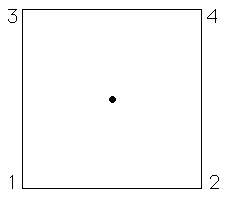

| For example of the Chaos Game, take four vertices, | ||||||
| the corners of the unit square, and take | ||||||
| Suppose the random number generator begins by selecting the vertices in this order: 1, 3, 4, 3, 2. | ||||||
| Click the picture to see the first five points generated by this run of the chaos game. | ||||||
|  | ||||||
| If we continue, the points will fill in the square. | ||||||
| This should be plausible: we start with a point inside the unit square, and each move is half-way between where we are and a corner of the square, so we never leave the square. | ||||||
| Because we select the corners randomly, no part of the square is preferred over any other. | ||||||
| So since some parts of the square fill in, all parts must fill in. | ||||||
| Do you believe this argument? | ||||||
| Look at Chaos Game Problems to test your intuition. |
Return to the Chaos Game.